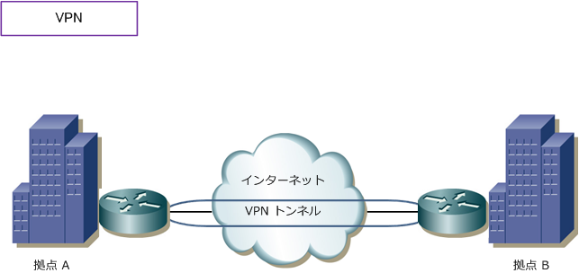
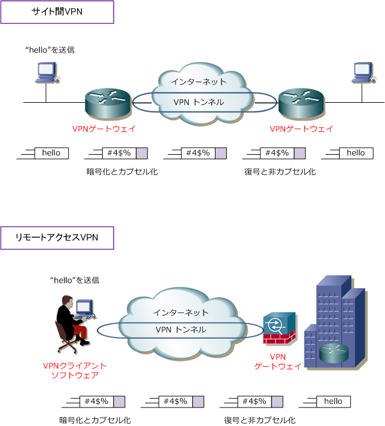

VPN ( Virtual Private Network )
VPNとは
VPN（Virtual Private Network）とは、仮想的なプライベートネットワーク接続のことです。VPNにより インターネットなどの公衆網を利用する場合でも、IPsec等の高度なセキュリティを実装させられるので、 安全に企業の拠点間通信を実現できます。また、安価なFTTHの広帯域な回線をWANとして利用できます。
VPN の特徴
VPN接続は、企業のWAN接続における新たな選択肢の1つとなっています。企業のWAN接続においては、 広域イーサネット、IP-VPN、ATM、FR、ISDN接続、専用線がありますが、インターネット回線を利用し インターネットVPNをWAN回線として使用することで、WAN接続におけるコストを大幅削減することが 可能になります。ただし、IPsecの実装によるトンネリングと暗号化により、もとのIPパケットに対して これらのヘッダーが付加されるので、LAN間接続よりMSSサイズを小さくして通信させる必要があります。

VPN の種類
VPNはインターネットVPNとIP-VPNの大きく2つに分類できます。インターネットVPNはインターネット などの公衆網を利用したVPNのことです。IP-VPNとは、通信事業者が提供するクローズド（閉じられた） IPネットワークを利用したVPNのことです。インターネットVPNには2種類があります。セキュリティ プロトコルにIPsecを使用したIPsec-VPNと、セキュリティプロトコルにSSLを使用した SSL-VPN です。 IP-VPNは、MPLS-VPN のことであり、プライベートIP網内の経路情報の探索にMPLSを採用しています。
| VPNの分類 | 使用技術 | 説明 |
|---|---|---|
| インターネットVPN | IPsec-VPN | セキュリティプロトコルにIPsecを使用したインターネットを利用したVPNのこと |
| インターネットVPN | SSL-VPN | セキュリティプロトコルにSSLを使用したインターネットを利用したVPNのこと |
| IP-VPN | MPLS-VPN | 通信事業者のプライベートIP網内で経路情報の探索にMPLSを採用したVPNのこと |
インターネットVPNのタイプ
VPN接続のタイプにはサイト間VPNとリモートアクセスVPNの大きく2タイプがあります。サイト間VPNでは ルータでIPsecによる暗号化とカプセル化を行うので、クライアントPCは暗号化通信を意識することなく通信 します。リモートアクセスVPNでは、PCにVPNクライアントソフトウェアをインストールして、そのPC上で 暗号化とカプセル化を行い、リモート接続先のVPNゲートウェイと通信を行います。詳細は以下のとおりです。
| インターネットVPNのタイプ | 説明 |
|---|---|
| サイト間VPN | VPNを実装したルータ同士を接続する構成。企業の拠点間を接続する時に使用する構成。 VPNの実装（パケットの暗号化、復号、カプセル化、非カプセル化）は、全てルータで行う ことから、クライアントPCにVPNクライアントソフトウェアをインストールする必要はない。 ※ IPsecを実装したルータやセキュリティ製品はVPNゲートウェイと呼ばれる。 |
| リモートアクセスVPN | VPNを実装したルータとVPNクライアントソフトをインストールしたPCとを接続する構成。 リモートアクセスVPN接続をするクライアントPCやモバイル端末には、VPNクライアント ソフト（Anyconnect等）をインストールしている必要がある。VPNクライアントソフトと VPNゲートウェイとの間で、パケットの暗号化、復号、カプセル化、非カプセル化を行う。 |
